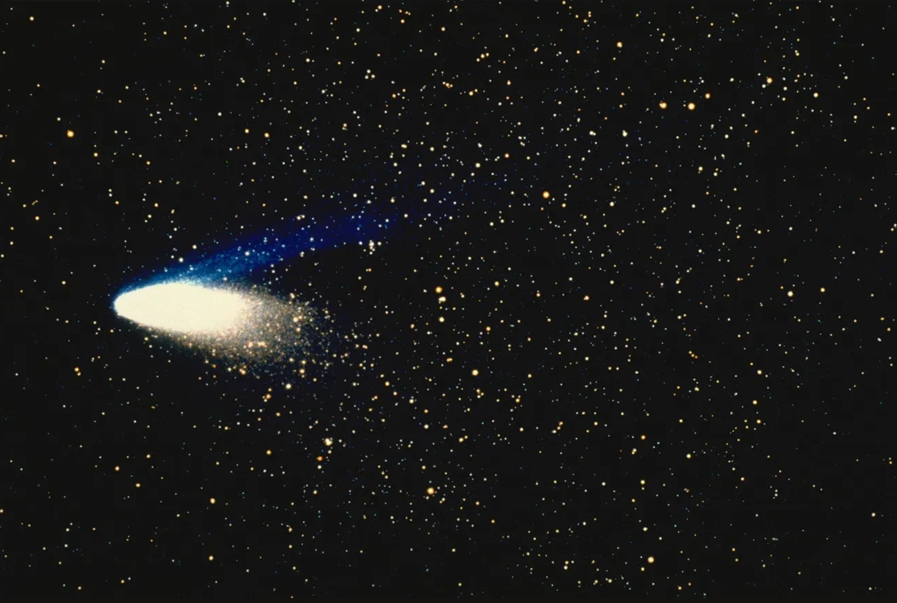
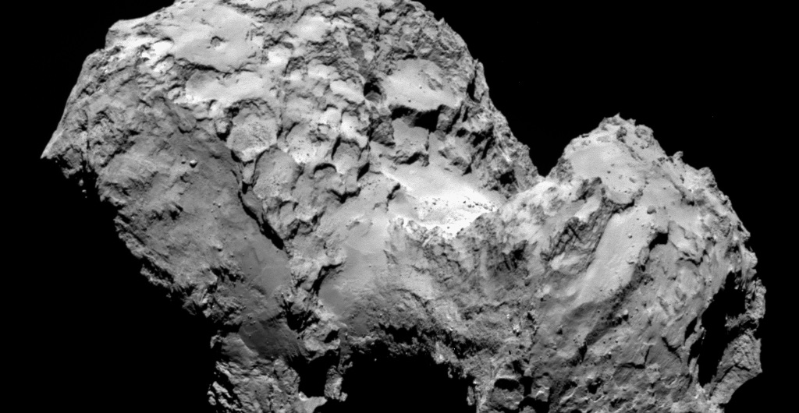
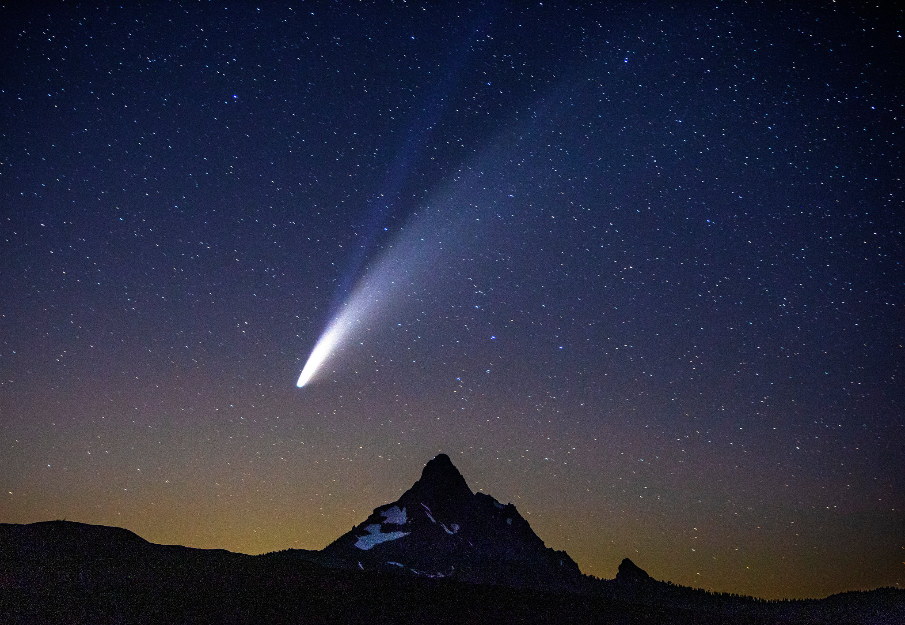

• Composition : Noyau de glace, poussière et composés organiques ("boule de neige sale")
• Taille typique : Noyaux de 1 à 50 km de diamètre
• Origine : Principalement du nuage d'Oort et de la ceinture de Kuiper
• Orbites : Généralement très elliptiques, périodes variant de quelques années à des millions d'années
• Caractéristiques visibles : Coma (atmosphère temporaire) et queues de poussière et d'ions lors du passage près du Soleil
• Comète la plus connue : Comète de Halley (période orbitale de 76 ans)
• Nombre estimé : Plusieurs billions dans le nuage d'Oort
Les comètes sont des corps célestes composés principalement de glace, de poussière et de composés organiques qui orbitent autour du Soleil. Souvent décrites comme des "boules de neige sales", elles sont des vestiges de la formation du système solaire il y a 4,6 milliards d'années. Leur nom vient du grec "kometes", signifiant "astre chevelu", en référence à leur apparence lorsqu'elles développent une queue.
Contrairement aux astéroïdes principalement rocheux, les comètes contiennent une grande quantité de "glaces" : eau gelée, dioxyde de carbone (glace sèche), méthane, ammoniac et divers composés organiques. Cette composition en fait des archives précieuses des conditions qui régnaient lors de la formation du système solaire.
Une comète typique est constituée de plusieurs parties distinctes :
• Le noyau : C'est le cœur solide de la comète, généralement de quelques kilomètres de diamètre. Composé de glaces et de poussières, il est souvent décrit comme une "boule de neige sale". À grande distance du Soleil, le noyau reste inactif et invisible depuis la Terre.
• La coma : Lorsque la comète s'approche du Soleil, la chaleur provoque la sublimation des glaces du noyau, créant une atmosphère temporaire appelée coma. Cette enveloppe gazeuse peut s'étendre sur des dizaines de milliers de kilomètres.
• La queue de poussière : Les particules de poussière libérées du noyau forment une queue courbe qui suit la trajectoire de la comète. Cette queue, souvent jaunâtre ou blanchâtre, peut s'étendre sur des millions de kilomètres.
• La queue d'ions : Le vent solaire ionise les gaz de la coma, créant une queue d'ions bleue qui pointe toujours directement à l'opposé du Soleil. Cette queue peut atteindre des centaines de millions de kilomètres.
Lorsqu'une comète s'approche du Soleil (périhélie), elle devient active : ses glaces se subliment, créant la coma et les queues caractéristiques. En s'éloignant du Soleil (aphélie), elle redevient inactive, perdant ses queues et sa coma. À chaque passage près du Soleil, une comète perd une partie de sa masse, ce qui signifie qu'elles ont une "durée de vie" limitée.
Les comètes proviennent principalement de deux régions du système solaire :
• Le nuage d'Oort : Une vaste coquille sphérique entourant le système solaire à environ 2 000 à 100 000 unités astronomiques du Soleil. Ce nuage hypothétique contiendrait des billions de noyaux cométaires. Les comètes qui en proviennent ont généralement des périodes orbitales très longues (plus de 200 ans) et des orbites fortement inclinées par rapport au plan de l'écliptique.
• La ceinture de Kuiper : Un disque d'objets glacés situé au-delà de l'orbite de Neptune, entre 30 et 50 unités astronomiques du Soleil. Les comètes issues de cette région ont généralement des périodes orbitales plus courtes (moins de 200 ans) et des orbites proches du plan de l'écliptique.
Les perturbations gravitationnelles, causées par les planètes géantes ou par des étoiles passant à proximité du système solaire, peuvent modifier les orbites des objets dans ces réservoirs, les envoyant vers le système solaire interne où ils deviennent des comètes actives.
Plusieurs comètes sont devenues célèbres en raison de leur visibilité spectaculaire ou de leur importance scientifique :
• Comète de Halley : Probablement la plus célèbre, elle revient tous les 76 ans environ. Son dernier passage près de la Terre date de 1986, et le prochain est prévu pour 2061. Elle est nommée d'après l'astronome Edmond Halley qui a prédit son retour périodique.
• Comète Hale-Bopp : L'une des comètes les plus brillantes des dernières décennies, visible à l'œil nu pendant 18 mois en 1996-1997. Son noyau est exceptionnellement grand, estimé à environ 60 km de diamètre.
• Comète Shoemaker-Levy 9 : Célèbre pour s'être fragmentée et avoir percuté Jupiter en 1994, offrant aux astronomes une occasion unique d'observer directement un impact planétaire.
• Comète 67P/Tchourioumov-Guérassimenko : Cible de la mission Rosetta de l'ESA, qui a placé une sonde en orbite autour de la comète et déposé l'atterrisseur Philae sur sa surface en 2014, une première dans l'histoire de l'exploration spatiale.
• Comète NEOWISE : Découverte en 2020, elle est devenue l'une des comètes les plus brillantes visibles depuis l'hémisphère nord depuis la comète Hale-Bopp.
L'exploration des comètes a considérablement progressé ces dernières décennies :
• Mission Giotto (1986) : Premier survol rapproché du noyau de la comète de Halley, révélant pour la première fois à quoi ressemble un noyau cométaire.
• Deep Impact (2005) : A lancé un impacteur sur la comète Tempel 1 pour étudier la composition de son intérieur.
• Stardust (2004) : A collecté des échantillons de la queue de poussière de la comète Wild 2 et les a ramenés sur Terre pour analyse.
• Rosetta et Philae (2014-2016) : La mission la plus ambitieuse à ce jour, avec une sonde orbitale et un atterrisseur qui ont étudié en détail la comète 67P/Tchourioumov-Guérassimenko pendant plus de deux ans, suivant son évolution lors de son approche du Soleil.
Les comètes ont une importance considérable à plusieurs niveaux :
• Témoins de la formation du système solaire : Leur composition primitive en fait des "capsules temporelles" préservant des matériaux datant de la naissance du système solaire.
• Origine de l'eau sur Terre : Certaines théories suggèrent que les impacts de comètes auraient pu apporter une partie significative de l'eau et des composés organiques présents sur Terre, contribuant potentiellement à l'émergence de la vie.
• Impact culturel : Tout au long de l'histoire humaine, les comètes ont été interprétées comme des présages, souvent de malheur. Aujourd'hui, elles continuent de fasciner le public par leur beauté et leur caractère éphémère.
• Risques d'impact : Bien que rare, la collision d'une comète avec la Terre pourrait avoir des conséquences catastrophiques, comme l'illustre potentiellement l'extinction des dinosaures il y a 66 millions d'années (bien que l'impacteur était probablement un astéroïde).

La célèbre comète de Halley photographiée lors de son dernier passage près de la Terre en 1986

Image détaillée du noyau de la comète 67P prise par la sonde Rosetta, montrant sa forme bilobée caractéristique

La comète NEOWISE illuminant le ciel nocturne en juillet 2020, avec ses queues de poussière et d'ions clairement visibles
Chez Cosmos Explorer, nous proposons plusieurs façons de découvrir et d'explorer les fascinantes comètes :
• Observations de comètes : Lors des passages de comètes visibles, nous organisons des soirées d'observation spéciales avec nos télescopes professionnels, permettant d'admirer ces visiteuses rares et spectaculaires.
• Exposition "Messagères du cosmos" : Notre exposition permanente présente l'histoire de l'observation des comètes, des échantillons de météorites d'origine cométaire, et des modèles détaillés des comètes les plus célèbres.
• Simulation interactive : Notre modèle numérique du système solaire vous permet de suivre les orbites des principales comètes et de simuler leur passage près du Soleil, avec la formation de leurs queues caractéristiques.
• Réalité virtuelle "Voyage sur une comète" : Vivez l'expérience unique de vous poser sur le noyau d'une comète et d'observer son activation lors de son approche du Soleil, inspirée de la mission Rosetta.
• Conférences "Chasseurs de comètes" : Découvrez comment les astronomes détectent et étudient les comètes, et comment les amateurs peuvent participer à leur observation et leur découverte.
• Atelier "Comètes en bouteille" : Une activité familiale où vous pourrez créer votre propre modèle de comète avec de la glace sèche, reproduisant le phénomène de dégazage observé sur les véritables comètes.
Pour plus d'informations sur nos programmes d'exploration des comètes, consultez notre page d'exploration ou contactez-nous.